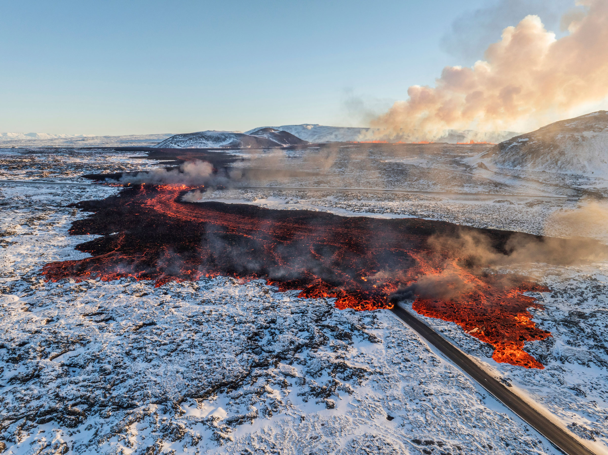
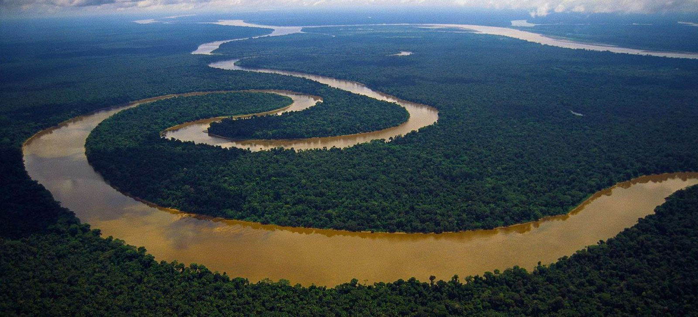
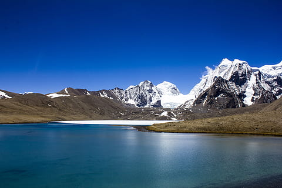
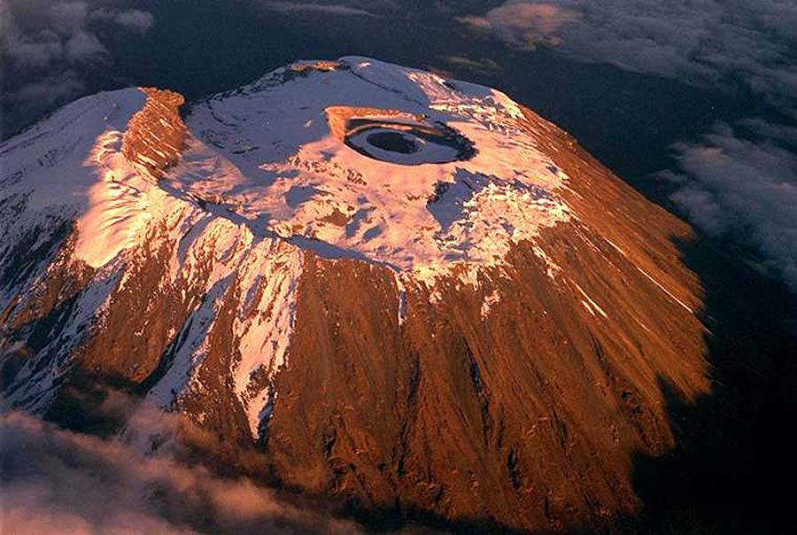
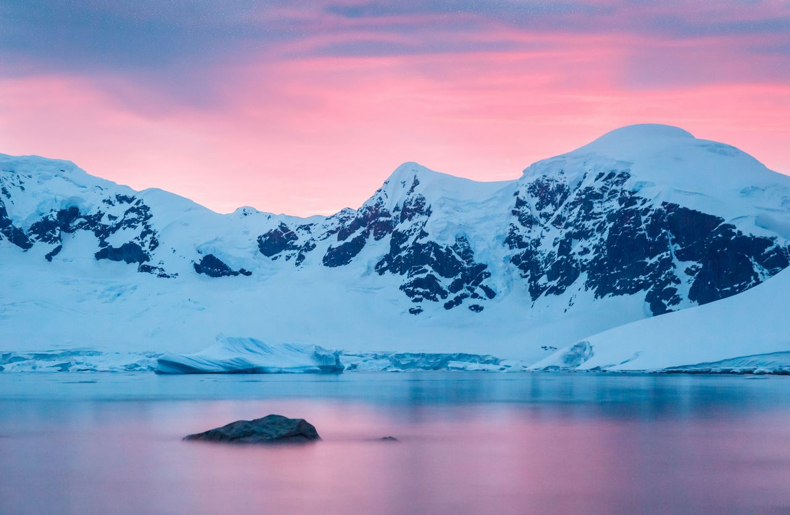

Покорение вулканов Исландии

Маршрут: Рейкьявик - вулкан Эйяфьядлайёкюдль - ледниковая лагуна.
Продолжительность: 10 дней.

Маршрут: Рейкьявик - вулкан Эйяфьядлайёкюдль - ледниковая лагуна.
Продолжительность: 10 дней.

Маршрут: Манаус - река Амазонка - деревня коренных народов.
Продолжительность: 14 дней.

Маршрут: Катманду - Лукла - базовый лагерь Эвереста.
Продолжительность: 18 дней.

Маршрут: Моши - маршрут Мачаме - пик Ухуру.
Продолжительность: 8 дней.

Маршрут: Ушуайя - пролив Дрейка - Антарктический полуостров.
Продолжительность: 12 дней.